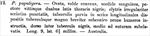

Click on images to enlarge
{kind=link}

Fig. 1. Paropsis papuligera, description
Name
Paropsis papuligera Stål, 1860
Corresponds to
Ta04.
Diagnosis and Notes
Blackburn (1896) placed papuligera as part of his 'subgroup i' (i.e., those species with "strongly marked characters"). Within that group, he characterises it as:
AAA. Prosternum normal, but other characters exceptional, as follows:-;
B. The humeral calli elevated into large ear-like processes.
Ta04 is clearly the same as T. papuligera, and a north-east New South Wales specimen of Ta04 was identified as such by B. J. Selman (pers. comm, 1979).
Type specimen
Not examined.
Original description
Translation of original description (Figure 1) by ChatGPT, 03/2026:
Ovate, very convex, dull blood-red; the venter and two broad stripes of the thorax black. Elytra irregularly punctured in somewhat serial rows, furnished with small tubercles arranged in longitudinal series and with a large, short, somewhat conical tubercle near the humeri; the dorsum between the tubercles black, in the middle near the suture somewhat raised. Length 9 mm, width 6½ mm. Australia.
References
Blackburn, T. 1896, "Revision of the genus Paropsis. Part I", Proceedings of the Linnean Society of New South Wales, vol. 21, no. 4, 637-693 (page 644).
Stål, C. 1860, "Till kannedomen om Chrysomelidae", Öfversigt af Kongelige Vetenskaps-Akademiens Förhandlingar, Stockholm, vol. 17, 455-470 (page 465).
Copyright © 2026. All rights reserved.